Unidos pela infecção
Conhecendo os insetos presentes em Hollow Knight
.
Unidos pela infecção
.
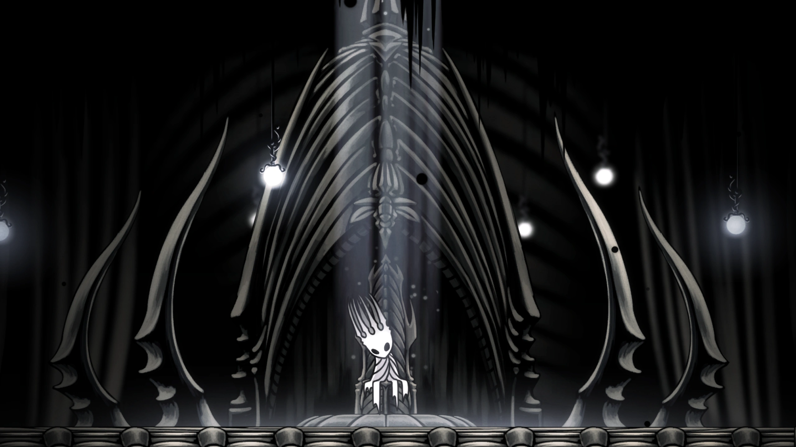
Conheça os insetos
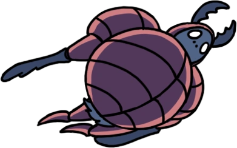
Um dos Cinco Grandes Cavaleiros de Hallownest, nobre e entusiasmado, que habita nas Vias Hidráulicas. Luta com bolas de esterco e mantém uma atitude honrada e alegre, apesar do ambiente onde vive.
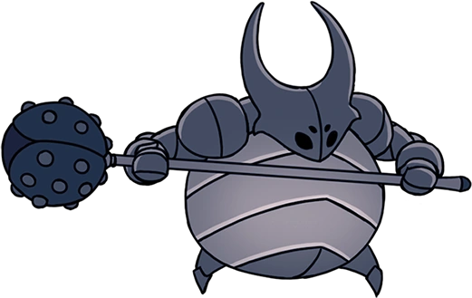
Uma pequena larva (maggot) fraca e desespero que roubou a armadura gigante de um cavaleiro real caído para tentar proteger os seus irmãos nas Encruzilhadas Esquecidas.
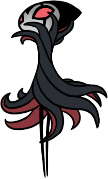
O dramático e elegante mestre da Companhia Grimm. Uma entidade misteriosa que viaja entre reinos em ruínas para realizar o ritual de colheita do Coração do Pesadelo.
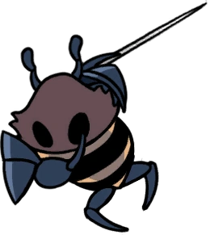
O leal guardião da Colmeia, dedicado até ao fim a proteger a sua rainha, a Rainha Vespa, mesmo após a ruína do reino.

A ágil e protetora guardiã de Hallownest, filha do Rei Pálido e de Herrah. Combate utilizando uma agulha e um fio de seda para testar a força do Cavaleiro ao longo da sua jornada.
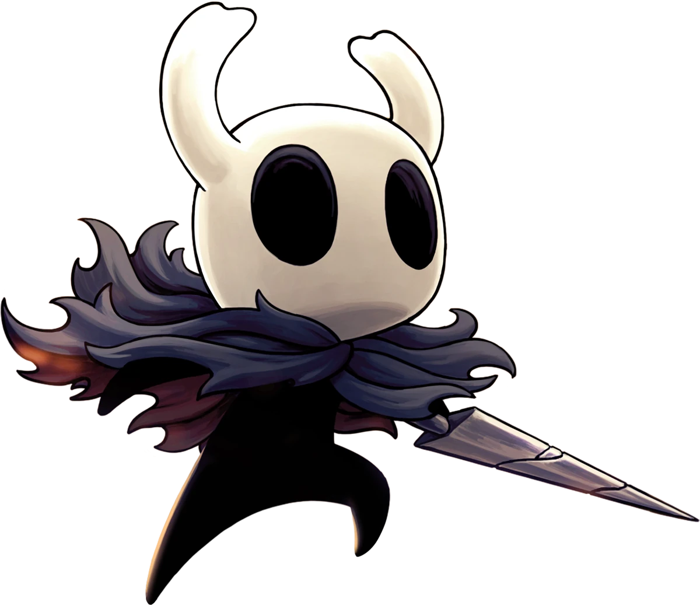
O protagonista silencioso do jogo, um Vaso criado do Vazio sem emoções ou mente própria, que regressa a Hallownest para cumprir o seu destino e conter a Infeção.
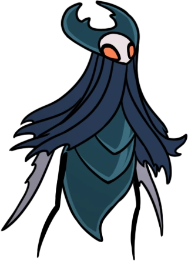
O ex-líder da tribo dos Louva-a-Deus que aceitou voluntariamente a Infeção da Radiância para obter mais poder, sendo expulso para os Jardins da Rainha.
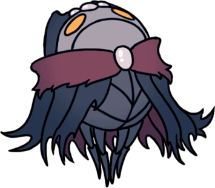
O líder enlouquecido do Santuário das Almas que, na tentativa desmedida de alcançar a imortalidade e curar a praga, começou a colher a alma de outros insetos.
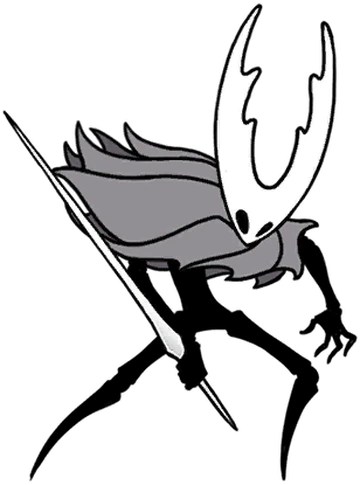
A forma original e imaculada do Hollow Knight antes de ser corrompido e enfraquecido pela Infecção que tentou selar no seu interior.
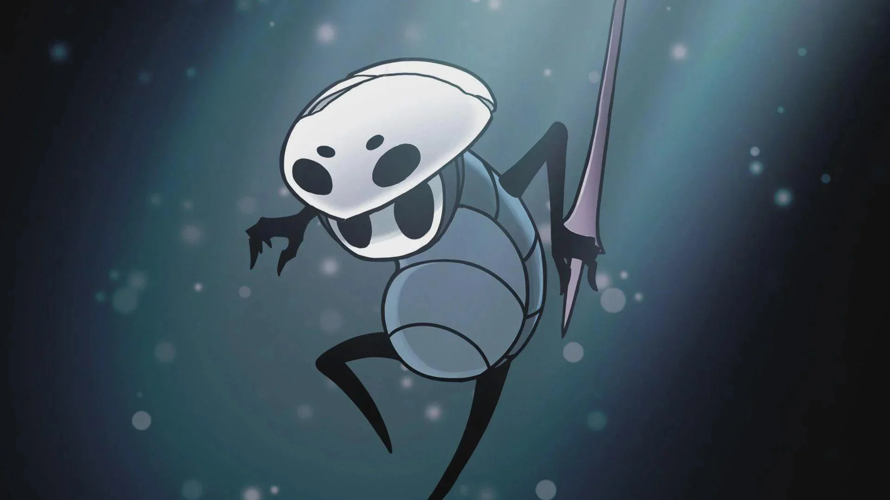
Um explorador sábio e amigável que viaja por Hallownest movido pela curiosidade, descobrindo aos poucos a sua antiga ligação ao reino e à Professora Monomon.
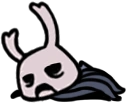
Conhecido como "Zote, o Poderoso", é um guerreiro arrogante, resmungão e iludido que se considera uma lenda de 57 Preceitos, embora dependa frequentemente da ajuda do Cavaleiro para sobreviver.
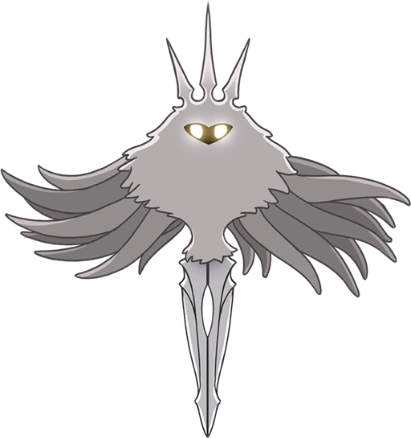
A Radiância é a antiga deusa da luz que criou a Infecção para dominar a mente dos insetos e recuperar seu poder sobre Hallownest.